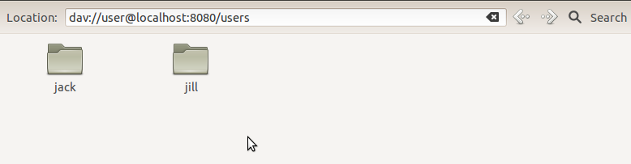

The first step with any Webdav, Caldav or Carddav application should be just to create a browseable hierarchy of folders, and then verify that you can browse it using a webdav client like BitKinex or Windows Explorer. Bitkinex gives helpful debuggnig information, so is my preference.
So what folder structure should we have? Well, Caldav clients can be quite picky. Even if your structure doesnt require the normal, deep, folder structure its probably best to stick to it. So we'll us a structure like this:
Each node in that URL tree is represented to milton as a source object. We create the relationships between objects with the @ChildrenOf annotation.
So first we need a mapping for the root resource. So add this to your HelloCaldavController class:
@Root
public HelloCaldavController getRoot() {
return this;
}
This just means that the root resource will be represented by the controller itself. If you use virtual hosts you will want to dynamically resolve the host (which can be passed to the method as an argument) and return some object which represents that virtual host.
Now we want a folder that represents the /users collection. This is obviously a fixed, or static resource. We don't need to look up anything from our database, we simply return a placeholder object like this:
@ChildrenOf
public UsersHome getUsersHome(HelloCaldavController root) {
return new UsersHome();
}
public class UsersHome {
public String getName() {
return "users";
}
}
Note that @ChildrenOf methods normally return a List of objects, but as shown above they can also return single objects
Now we want to get the list of users inside the users collection, like this:
@ChildrenOf
@Users
public List<User> getUsers(UsersHome usersHome) {
return users;
}
By annotated this method with @Users we're telling milton to look here for users when performing authentication.
Next we need to get the fixed resource "cals" which is under the user. Eg /users/jack/cals. This is like the users collection above, we just return a placeholder object:
@ChildrenOf
public Calendar getCalendar(CalendarsHome cals) {
return new Calendar(cals.user);
}
public class CalendarsHome {
private final User user;
public CalendarsHome(User user) {
this.user = user;
}
public String getName() {
return "cals";
}
}
The CalendarsHome object holds a reference to the user it was found from, allowing us to use it later
Now, at least we can get the events within a calendar. For this example, these are just the Meeting objects associated with a User:
@ChildrenOf
public List<Meeting> getCalendarsHome(Calendar cal) {
return cal.user.getMeetings();
}
Before we can connect and use our new server, we should provide a means to login! To lets just create an @Authenticate method:
@Authenticate
public String getPassword(User user) {
return user.getPassword();
}
Note that there are several supported forms of authenticate methods, so dont freak out if you only store password hashes.
We can now run the application and browse through the folders. Note that we create two users on startup so there is some data to see.
Login with jack/password or jill/password
Now lets browse the folders with your favourite webdav browser. I'm running linux so i'll use Nautilus, but you can use Mac Finder, Windows Explorer, or something like Bitkinex, Cyberduck, Cadaver, etc.
